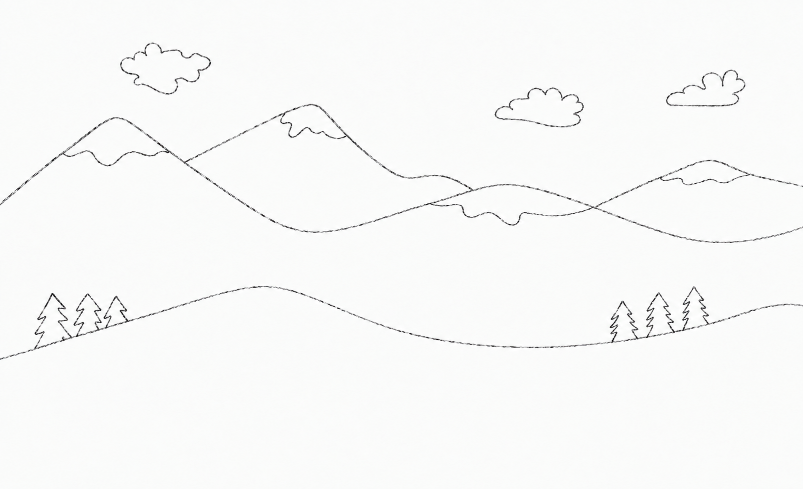

2017.09 — 2022.06
中国美术学院
本科 · 建筑学 · GPA 4.27 / 5
核心课程：设计基础、建筑设计及理论、城市设计及理论、批判性社会学、空间设计、现象学、设计与实践。

ARCHITECTURE · ART · OBJECTS
PERSONAL ARCHIVE / 2026
Hi，欢迎来到我的网站。
本人本科与硕士均就读于中国美术学院的建筑学专业，研究生期间曾赴法国圣埃蒂安艺术与设计学院交换学习一学期，学习空间设计、产品设计与平面设计。我的兴趣从空间延伸到日常物件、手工创作与影像表达，喜欢观察生活中的细节，也享受把想法变成具体作品的过程。
学习之余，我喜欢探索不同材料与制作方式，动手能力较强。在业余创作中，我喜欢钩针、刺绣等手工创作，并尝试通过摆摊市集的形式让作品与呈面。对我而言，创作的乐趣既在于构思，也在于亲手制作、反复调整，以及看到作品被人喜欢和使用。
除此之外，摄影与视频也是我记录和表达的方式。交换期间，我走访了11个国家，用镜头记录建筑与人文，并拍摄图文、剪辑了一系列 Vlog。这些经历让我持续练习观察、选择与叙事，也为创作积累了不同文化和日常生活中的灵感。
作为“高精力人群”的一员，生活中，我喜欢跑步、徒步等各类运动，保持着积极乐观的状态。我期待将自己的审美、动手能力和多种媒介的表达经验，带入更多与设计和创意相关的工作。
feif
需要验证
请输入正确答案以查看详细内容
2017.09 — 2022.06
本科 · 建筑学 · GPA 4.27 / 5
核心课程：设计基础、建筑设计及理论、城市设计及理论、批判性社会学、空间设计、现象学、设计与实践。
2024.09 — 2025.02
交换 · 空间设计（espace）、平面设计（graphism）
2022.09 — 2025.06
硕士 · 建筑学 · 保研 · 导师王澍
核心课程：建筑历史及实践、建筑设计更新、可持续设计实践、生土实验。
SCROLL TO CONTINUE ↓
浙江省省政府奖学金新闻中心策划部部员
中国美术学院校三等奖学金暑期前往台州仙居支教全国高校联合竞技赛志愿者
浙江省省政府奖学金被评为优秀团员校级新苗计划结题暑期龙游古民居测绘实践
中国美术学院校二等奖学金被评为优秀团干部竞技健美操队队长NS 运动社部长与队员共同组织创办运动社团校级新苗计划结题
浙江省省政府奖学金本科招生考试优秀志愿者本科招生、研究生复试、望江山疗养院志愿者参加红十字会考核并取得救护资格证“百年党史的建筑表达”主题展览优秀个人金华“江南第一家”调研
毕业创作暨林风眠创作铜奖中国美术学院思政微课比赛二等奖浙江省高校思政微课大赛复赛完全学分制宣讲活动志愿者国际设计博物馆志愿者入选杭州亚运会志愿者受聘 2022 届校友联络员青年讲师团成员中国美术学院学业奖学金校研究生学会联络部部员
中国美术学院学业奖学金亚运会优秀志愿者“创青春”第四届全国大学生乡村振兴大赛金奖
第 14 届中国大学生健美操锦标赛普通院校 A 组规定有氧踏板第一名第 15 届中国大学生健美操锦标赛普通院校 A 组规定有氧舞蹈第三名浙江省第十五届大学生运动会健美操比赛第三名第三届 SYDF 海峡两岸青年发展论坛嘉年华表演活动
产品研发 · 项目执行
项目全流程：核心团队参与招商·西安湾高端样板间从概念至交付的全流程落地，围绕项目定位参与方案迭代、甲方沟通及最终场景呈现。
产品研发：负责定制家具从设计深化、结构及工艺研究、材质/面料选型、打样到工厂生产的完整流程，并参与灯具、地毯、布艺及软装产品的选型与组合。
供应链协同：对接甲方、家具工厂及软装供应商，跟进产品尺寸、材质、工艺、样品、生产周期及现场问题，协调设计效果与实际交付。
落地交付：参与现场复尺、安装及最终摆场，把控整体视觉与空间体验，形成“概念 → 产品 → 供应链 → 场景 → 交付”的完整项目经验。
第七届浙江省大学生乡村振兴创意大赛
调研与定位：围绕杭州建德之江村花卉资源开展在地调研，以“花”为核心媒介进行项目主题定位与文旅体验策划。
IP与内容策划：参与原创“花仙子”IP及项目视觉内容设计，将IP延伸至主题海报、花卉内容及线下体验场景。
场景体验：策划并设计主题花房、艺术装置、临时展台及滨水观景节点，将自然资源转化为具有记忆点的文旅体验内容。
0-1落地：全程参与调研、主题策划、IP及视觉设计、场景搭建与现场执行，推动项目由概念方案转化为实际文旅体验场景。
参与文旅项目前期调研、概念策划与视觉内容呈现，结合场地特征与使用场景进行方案梳理；参与东钱湖南岸项目的空间与体验设计，并协助完成项目提案、视觉材料及汇报内容制作。
01｜AI与创意技术ChatGPT · Gemini · Codex · ComfyUI · Lovart
02｜产品与原型Figma · Codex · Web
03｜视觉与内容Photoshop · Illustrator · InDesign · Lightroom · Premiere Pro
04｜设计与空间Rhino · SketchUp · AutoCAD · Enscape
05｜语言能力英语：IELTS 6.5 · CET-6；法语：基础沟通
从建筑空间到日常物件，记录关于尺度、材料与手感的持续实验。
建筑课程作品